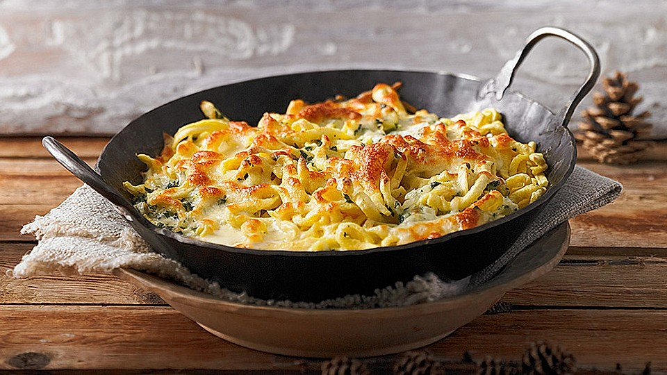

Kaese Spaetzle

Description
A tasty homemade pasta tossed with onion and emmentaler cheese. It is the bavarian version of macaroni and cheese.
Ingredients
- 1 ½ cups all-purpose flour
- ¾ teaspoon ground nutmeg
- ¾ teaspoon salt
- ⅛ teaspoon pepper
- 3 eggs
- ⅜ cup 2% milk
- 3 tablespoons butter
- 1 onion, sliced
- 1 ½ cups shredded Emmentaler cheese
Steps
- Sift together flour, nutmeg, salt and pepper. Beat eggs in a medium bowl. Alternately mix in milk and the flour mixture until smooth. Let stand for 30 minutes.
- Bring a large pot of lightly salted water to a boil. Press batter through a spaetzle press into the water. You may also use a potato ricer, colander, or a cheese grater. When the spaetzle has floated to the top of the water, remove it to a bowl with a slotted spoon. Mix in 1 cup of the cheese.
- Melt butter in a large skillet over medium-high heat. Add onion, and cook until golden. Stir in spaetzle and remaining cheese until well blended. Remove from heat, and serve immediately.